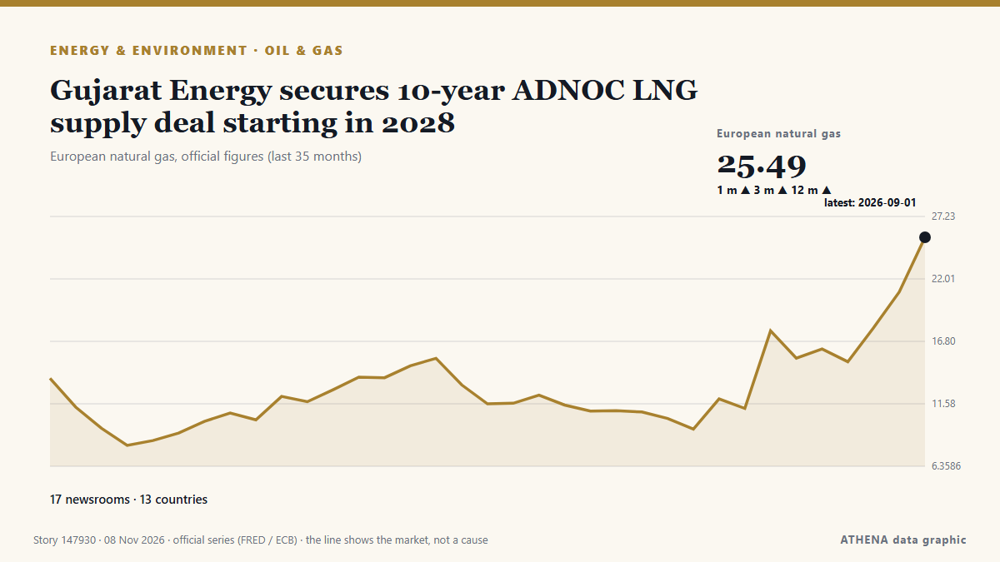

Oil & gas
SponsoredPresented by  Cybernetics and Artificial Intelligence Lab Welcome to the Cybernetics and Artificial Intelligence Laboratory, established at the Department of Business Administration of the National and Kapodistrian University of Athens. The lab is headed by Professor Dimitrios Thomakos. The lab aims to do research that can be published in top venues. Our research uses tools and methods of Artificial Intelligence, and lies in the following areas: - Forecasting - Decision making - Cyber security - Finance We are always looking forward to collaborating with exceptional students!
Cybernetics and Artificial Intelligence Lab Welcome to the Cybernetics and Artificial Intelligence Laboratory, established at the Department of Business Administration of the National and Kapodistrian University of Athens. The lab is headed by Professor Dimitrios Thomakos. The lab aims to do research that can be published in top venues. Our research uses tools and methods of Artificial Intelligence, and lies in the following areas: - Forecasting - Decision making - Cyber security - Finance We are always looking forward to collaborating with exceptional students!
| 26 Oct | 1 |
|---|---|
| 27 Oct | 0 |
| 28 Oct | 0 |
| 29 Oct | 1 |
| 30 Oct | 0 |
| 31 Oct | 0 |
| 1 Nov | 1 |
| 2 Nov | 1 |
| 3 Nov | 1 |
| 4 Nov | 4 |
| 5 Nov | 7 |
| 6 Nov | 4 |
| 7 Nov | 2 |
| 8 Nov | 1 |

Gujarat Energy secures 10-year ADNOC LNG supply deal starting in 2028
French energy giant TotalEnergies has signed a heads of agreement with Jiangsu Guoxin Group, a major energy company in China's Jiangsu province, to deliver 900,000 tons of LNG per year. from LNG Prime
Namibia: Dangote Promises Cheaper Fuel for Namibia...Launches N$41.6b Pipeline Project in Walvis
[New Era] Walvis Bay -- Namibians could see a significant reduction in fuel prices when the Dangote Namibia Tank Farm and Regional Pipeline project becomes operational. from AllAfrica
‘Baby Barrel’: The next Boland leading Australia’s emerging cartel
These are the men who loom as the future of Australia’s fast bowling stocks, and are already making waves on the big stage. from The Age
North American rig count up slightly as Canada adds oil rigs
In North America, 823 rigs were working this week, up 3 from last week, and up 74 from this time last year. from Oil & Gas Journal
SLB OneSubsea secures Aker BP contract for Lyra field in Norway
SLB OneSubsea has been selected by Aker BP to provide subsea production systems, umbilicals and related services for the Lyra field on NCS. from Offshore Technology
Brent oil price benchmark set for biggest weekly drop since 2020
LONDON: Oil prices were set for a sharp weekly fall after the election losses of US President Donald Trump's Republican Party raised hopes of a de-escalation in the US-Israeli war on Iran and a stock… from New Straits Times
Oil prices rebound as US results, Iran war shape markets
Oil prices rose on Friday, recovering some of their recent losses after a turbulent week marked by the US midterm elections and uncertainty over the course of the war between the U... from Oman Observer
Turkey says gas pipeline project with Turkish Cypriots can provide power to whole island
Turkish Energy Minister Alparslan Bayraktar said a planned natural gas pipeline linking Turkey and the breakaway Turkish Cypriot community could eventually provide power to the entire ethnically… from Cyprus Mail
U.S. crude oil imports from Venezuela in July were highest since 2017
In July 2026, U.S. imports of crude oil from Venezuela averaged 701,000 barrels per day (b/d), the most since May 2017, before decreasing to 655,000 b/d in August, according to data published in our… from US EIA Today in Energy
Worley Lands EPC Contract for Venture Global's CP2 LNG Expansion
Worley has signed a reimbursable engineering, procurement and construction (EPC) contract with Venture Global for the CP2 Expansion project in Louisiana, United States… from Offshore Engineer
Injury in Adygea, fire in Krasnodar Region, 142 drones downed: aftermath of new attacks
A Gorlovka resident was injured in a Ukrainian drone attack in the Tsentralno-Gorodskoy District. from TASS (English)
Brent crude oil price exceeds $100
Oil prices experienced a decline of over 1% after hitting six-month peaks, primarily due to geopolitical unrest in Saudi Arabia. from Times of India
Ukrainian forces have rendered 15 of 38 main Russian oil refineries inoperable
Attacks by Ukrainian forces have shut down 15 major Russian refineries and forced 12 others to cut production, triggering domestic fuel supply shortages. from Ukrainska Pravda (English)
Wärtsilä Helps Chevron Cut Methane Emissions with LNG Carriers Upgrade
Wärtsilä has completed the conversion of one engine on each of three LNG carriers operated by Chevron Transport Corporation from dual-fuel to spark gas operation, as part of a project aimed at… from MarineLink
Commonwealth leaders adopt disability inclusion plan to benefit 450 million people
Staff WriterCommonwealth leaders have endorsed a new action plan aimed at strengthening the rights and improving opportunities for more than 450 million persons with disabilities across the… from Antigua Observer
Oil Fund Falls 8.07% as Petrobras Slides 6.97% | Oil, Nov 4
Oil dropped on 4 November: the USO fund fell 8.07%, Petrobras 6.97%, YPF 7.14% and Ecopetrol 3.75% as traders bet on an end to the Iran war. from The Rio Times
Three injured in fire near electricity substation in New Zealand's Auckland
Thick plumes of smoke could be seen billowing into the sky over Auckland’s Penrose, with smoke spreading across the surrounding area. from Stuff
Daniel Sikkema Sentenced to Life in Prison for the Murder of New York Art Dealer Brent Sikkema
He was charged with three convictions: murder-for-hire, conspiracy to commit murder-for-hire, and conspiracy to commit murder in a foreign country. from ARTnews
Syria says it foiled Hezbollah plot to attack Homs oil refinery
Nov 3 - Syrian security forces have arrested members of a cell linked to Lebanese Iran-backed militant group Hezbollah accused of planning to attack the Homs oil refinery in central Syria, state news… from The Straits Times